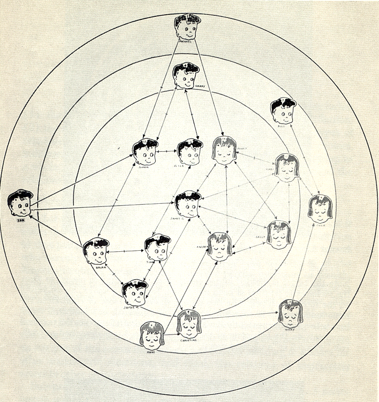
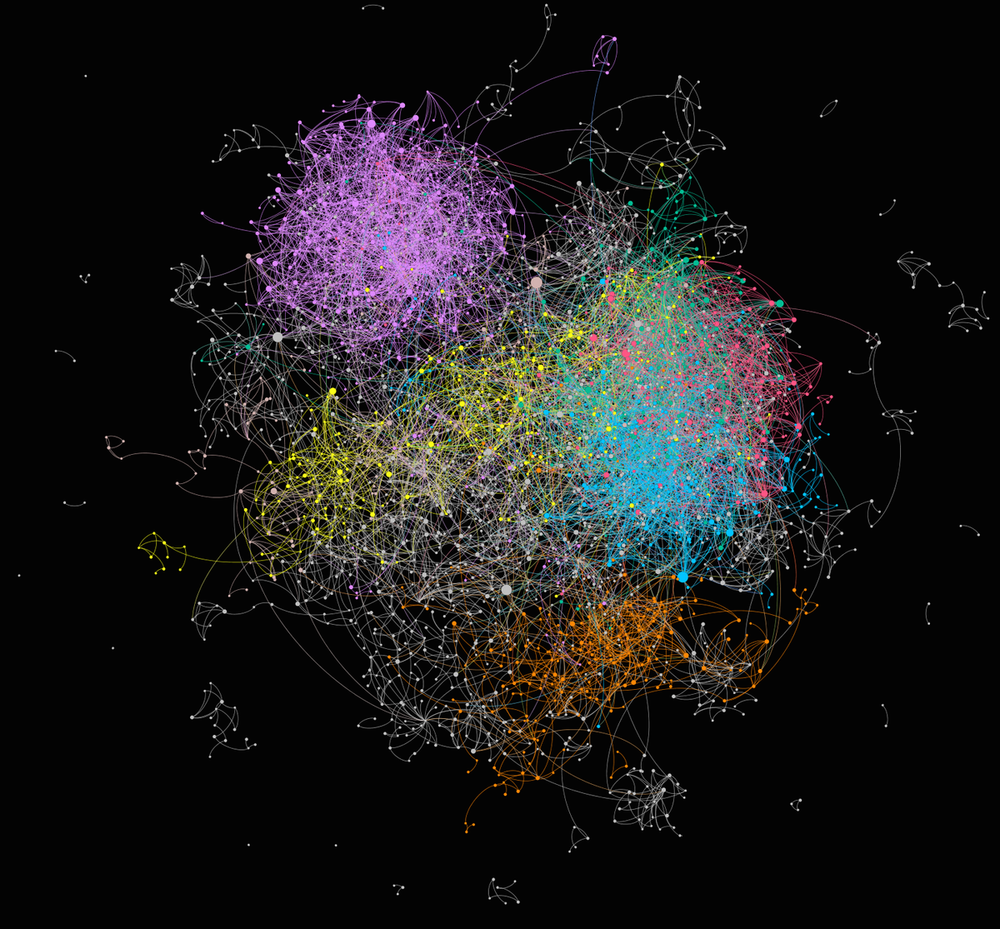
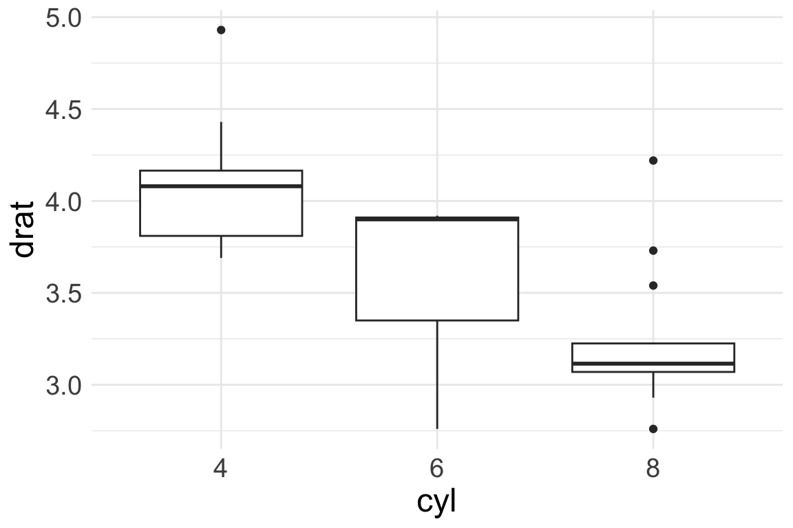
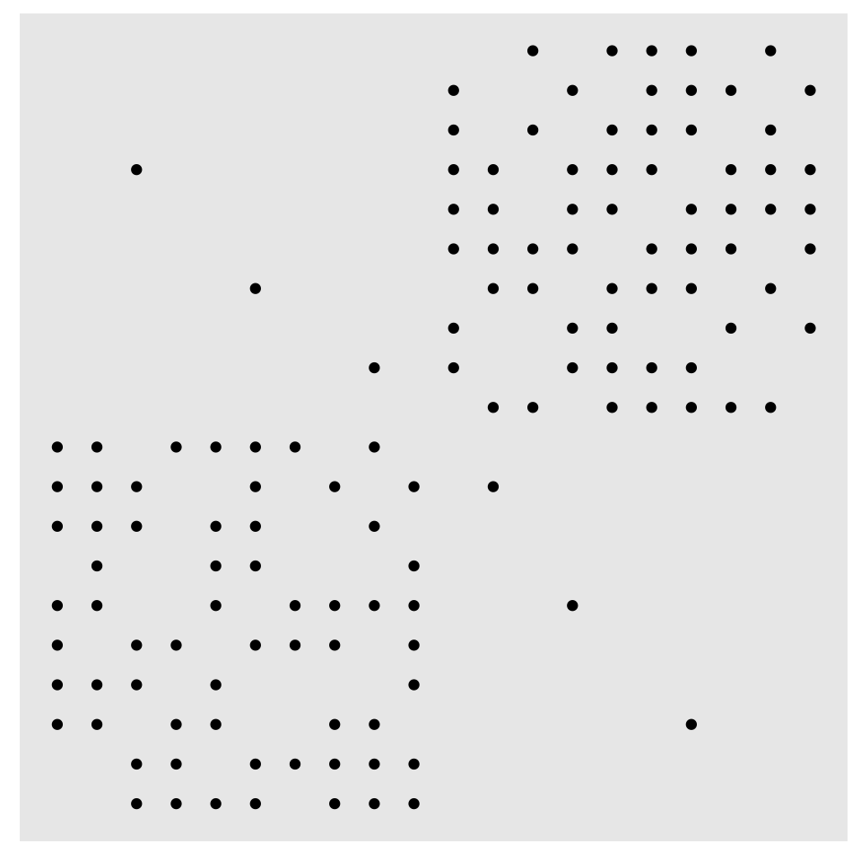

| mpg | cyl | disp | hp | drat | |
|---|---|---|---|---|---|
| Mazda RX4 | 21.0 | 6 | 160 | 110 | 3.90 |
| Mazda RX4 Wag | 21.0 | 6 | 160 | 110 | 3.90 |
| Datsun 710 | 22.8 | 4 | 108 | 93 | 3.85 |
| Hornet 4 Drive | 21.4 | 6 | 258 | 110 | 3.08 |
| Hornet Sportabout | 18.7 | 8 | 360 | 175 | 3.15 |
| Valiant | 18.1 | 6 | 225 | 105 | 2.76 |
Network Visualization I
Social Network Analysis
Termeh Shafie
A brief history of network visualization
Württemberg family tree (1585)
Bridges of Königsberg, Euler (1741)
Moreno (1934)
“Social Atom” representation Lundberg Steel (1938)
Davis et al (1941)
Loomis (1948)

First Graders Northway (1952)
Klovdahl’s (1982) adaptation of biology imaging software for social networks (ORTEP)
Vaseline - Prescribe the nation

Firework or network?
Visualizing “ordinary” data
Visualizing “ordinary” data
| mpg | cyl | disp | hp | drat | |
|---|---|---|---|---|---|
| Mazda RX4 | 21.0 | 6 | 160 | 110 | 3.90 |
| Mazda RX4 Wag | 21.0 | 6 | 160 | 110 | 3.90 |
| Datsun 710 | 22.8 | 4 | 108 | 93 | 3.85 |
| Hornet 4 Drive | 21.4 | 6 | 258 | 110 | 3.08 |
| Hornet Sportabout | 18.7 | 8 | 360 | 175 | 3.15 |
| Valiant | 18.1 | 6 | 225 | 105 | 2.76 |
Visualizing “ordinary” data
| mpg | cyl | disp | hp | drat | |
|---|---|---|---|---|---|
| Mazda RX4 | 21.0 | 6 | 160 | 110 | 3.90 |
| Mazda RX4 Wag | 21.0 | 6 | 160 | 110 | 3.90 |
| Datsun 710 | 22.8 | 4 | 108 | 93 | 3.85 |
| Hornet 4 Drive | 21.4 | 6 | 258 | 110 | 3.08 |
| Hornet Sportabout | 18.7 | 8 | 360 | 175 | 3.15 |
| Valiant | 18.1 | 6 | 225 | 105 | 2.76 |
Visualizing “ordinary” data
| mpg | cyl | disp | hp | drat | |
|---|---|---|---|---|---|
| Mazda RX4 | 21.0 | 6 | 160 | 110 | 3.90 |
| Mazda RX4 Wag | 21.0 | 6 | 160 | 110 | 3.90 |
| Datsun 710 | 22.8 | 4 | 108 | 93 | 3.85 |
| Hornet 4 Drive | 21.4 | 6 | 258 | 110 | 3.08 |
| Hornet Sportabout | 18.7 | 8 | 360 | 175 | 3.15 |
| Valiant | 18.1 | 6 | 225 | 105 | 2.76 |

Visualizing networks is hard(er)
ordinary data
- clear data format (rows: observations, columns: variables)
- plot style dependent on variable scale (barchart, scatterplot, boxplot,…)
- illustrate relations between variables
- given relative positions
network data
- different data formats (adjacency matrix, edgelist, adjaceny list, …)
- how to choose a proper layout algorithm?
- more degrees of freedom
- can we draw any conclusions from a network plot?
network visualization tools
gephi
works quite well for visualizing large networks
visone
well designed GUI and algorithms
(graphlayouts implements most algorithms from it)
and many more
cytoscape, NodeXL, GraphViz, python, …
Network visualization in
which package(s) to choose?
igraph: great for analyses, but plotting can be tricky
(check out https://kateto.net/network-visualization)- networks as ggplot2 objects:
ggnet2,ggnetwork ggraph: grammar of graphics for networks- interactive/3D:
visNetwork,threejs
why ggraph?
maintained by RStudio/Posit
stable and reliable (many other packages have been abandoned)
plays well with other packages
thoughtful API
extension of ggplot2
grammar of graphics
Grammar of graphics
Framework which follows a layered approach to describe and construct visualizations or graphics in a structured manner
Grammar of graphics
Data: Identify dimensions you want to visualize
Aesthetics/scales: Axes of data. Also size, shape, color, …
Geometries: depiction of data points (points, bars, lines, …)
Facets: Subplots based on specific dimensions?
Statistics: Show some statistical measures?
Coordinates: Type of coordinate system (cartesian, polar,…)
Theme: bling bling
Grammar of graphics (network edition)
Data: Identify dimensions you want to visualize
Aesthetics/scales: Axes of data. Also size, shape, color, …
Geometries: depiction of data points (points, bars, lines, …)
Facets: Subplots based on specific dimensions?
Statistics: Show some statistical measures?
Coordinates: Type of coordinate system (cartesian, polar,…)
Theme: bling bling
network data: the graph?

network data: data frames!
| name | sex | homeworld | species |
|---|---|---|---|
| R2-D2 | none | Naboo | Droid |
| NUTE GUNRAY | male | Cato Neimoidia | Neimodian |
| OBI-WAN | male | Stewjon | Human |
| EMPEROR | male | Naboo | Human |
| JAR JAR | male | Naboo | Gungan |
| TARPALS | male | Naboo | Gungan |
| from | to | weight |
|---|---|---|
| WATTO | C-3PO | 1 |
| ANAKIN | GREEDO | 1 |
| EMPEROR | BAIL ORGANA | 1 |
| QUI-GON | GREEDO | 1 |
| JAR JAR | SEBULBA | 2 |
| OBI-WAN | BOSS NASS | 2 |
+layout
see tidygraph
first full example (don’t panic!)
# load and manipulate data
data("starwars")
sw1 <- starwars[[1]]
sw_palette <- c("#1A5878", "#C44237", "#AD8941", "#E99093", "#50594B")
V(sw1)$interactions <- graph.strength(sw1)
#plot
ggraph(graph = sw1,layout = "stress") +
geom_edge_link0(edge_colour = "grey25",
aes(edge_linewidth = weight)) +
geom_node_point(shape = 21, color = "black",stroke = 1,
aes(fill = sex,size = interactions)) +
geom_node_text(color = "black", size = 4, repel = FALSE,
aes(filter = (interactions>=65),label = name))+
scale_edge_width(range = c(0.1,1.5),guide = "none")+
scale_size(range = c(3,10),guide = "none")+
scale_fill_manual(values = sw_palette, na.value = "grey",name = "")+
coord_fixed()+
theme_graph() +
theme(legend.position = "bottom") +
guides(fill = guide_legend(override.aes = list(size=6)))first full example (don’t panic!)
1) layout
ggraph(graph = sw1,layout = "stress", ...)
- graph: igraph object sw1 (can also be a tidygraph object)
- layout: used algorithm
- …: additional parameters depend on algorithm
Graph drawing
Criteria for “pleasing” layouts:
- minimising edge crossings
- minimising edge bends
- maximising symmetry
- maximising the minimum angle between edges leaving a node
- maximising node/edge orthogonality
Matrix representation
Sometimes we do not need a node-edge diagram
Matrix representation
But it can be tricky to find an adequate ordering
Matrix representation
If one is known, it can be supplied as an argument
Matrix representation
The seriation package has a nicer out of the box method
2) edges: geoms
geom_edge_link0(edge_colour = "grey25", aes(edge_linewidth = weight))
ls("package:ggraph",pattern = "geom_edge_*")
#> [1] "geom_edge_arc" "geom_edge_arc0"
#> [3] "geom_edge_arc2" "geom_edge_bend"
#> [5] "geom_edge_bend0" "geom_edge_bend2"
#> [7] "geom_edge_bundle_force" "geom_edge_bundle_force0"
#> [9] "geom_edge_bundle_force2" "geom_edge_bundle_minimal"
#> [11] "geom_edge_bundle_minimal0" "geom_edge_bundle_minimal2"
#> [13] "geom_edge_bundle_path" "geom_edge_bundle_path0"
#> [15] "geom_edge_bundle_path2" "geom_edge_density"
#> [17] "geom_edge_diagonal" "geom_edge_diagonal0"
#> [19] "geom_edge_diagonal2" "geom_edge_elbow"
#> [21] "geom_edge_elbow0" "geom_edge_elbow2"
#> [23] "geom_edge_fan" "geom_edge_fan0"
#> [25] "geom_edge_fan2" "geom_edge_hive"
#> [27] "geom_edge_hive0" "geom_edge_hive2"
#> [29] "geom_edge_link" "geom_edge_link0"
#> [31] "geom_edge_link2" "geom_edge_loop"
#> [33] "geom_edge_loop0" "geom_edge_parallel"
#> [35] "geom_edge_parallel0" "geom_edge_parallel2"
#> [37] "geom_edge_point" "geom_edge_sf"
#> [39] "geom_edge_span" "geom_edge_span0"
#> [41] "geom_edge_span2" "geom_edge_tile"geom_edge_type: generate n points, draw path
geom_edge_type0: direct line
geom_edge_type2: can interpolate node parameters
2) edges: geoms
geom_edge_link0(edge_colour = "grey25", aes(edge_linewidth = weight))
ls("package:ggraph",pattern = "geom_edge_*")
#> [1] "geom_edge_arc" "geom_edge_arc0"
#> [3] "geom_edge_arc2" "geom_edge_bend"
#> [5] "geom_edge_bend0" "geom_edge_bend2"
#> [7] "geom_edge_bundle_force" "geom_edge_bundle_force0"
#> [9] "geom_edge_bundle_force2" "geom_edge_bundle_minimal"
#> [11] "geom_edge_bundle_minimal0" "geom_edge_bundle_minimal2"
#> [13] "geom_edge_bundle_path" "geom_edge_bundle_path0"
#> [15] "geom_edge_bundle_path2" "geom_edge_density"
#> [17] "geom_edge_diagonal" "geom_edge_diagonal0"
#> [19] "geom_edge_diagonal2" "geom_edge_elbow"
#> [21] "geom_edge_elbow0" "geom_edge_elbow2"
#> [23] "geom_edge_fan" "geom_edge_fan0"
#> [25] "geom_edge_fan2" "geom_edge_hive"
#> [27] "geom_edge_hive0" "geom_edge_hive2"
#> [29] "geom_edge_link" "geom_edge_link0"
#> [31] "geom_edge_link2" "geom_edge_loop"
#> [33] "geom_edge_loop0" "geom_edge_parallel"
#> [35] "geom_edge_parallel0" "geom_edge_parallel2"
#> [37] "geom_edge_point" "geom_edge_sf"
#> [39] "geom_edge_span" "geom_edge_span0"
#> [41] "geom_edge_span2" "geom_edge_tile"geom_edge_link0() and geom_edge_parallel0() suffice
2) edges: geom type examples
2) edges: geom type examples
2) edges: geom type examples
2) edges: geom type examples
2) edges: geom type examples
2) edges: geom type examples
2) edges: aesthetics
geom_edge_link0(edge_colour = "grey25", aes(edge_linewidth = weight))
mapping aesthetics
- global: all edges have the same appearance
(e.g.edge_colour = "grey25")
- via attributes: appearance depends on attribute
(e.g.aes(edge_linewidth = weight))
available aesthetics
edge_colo(u)r, edge_linewidth, edge_linetype, edge_alpha
2) edges: aesthetics examples
2) edges: aesthetics examples
2) edges: aesthetics examples
2) edges: misc
3) nodes: geoms
geom_node_point(shape = 21, color = "black",stroke = 1, aes(fill = sex,size = interactions))
geom_node_point(): draw nodes as a simple point
3) nodes: aesthetics
geom_node_point(shape = 21, color = "black",stroke = 1, aes(fill = sex,size = interactions))
mapping aesthetics
- global: all nodes have the same appearance
(e.g.shape = 21)
- via attributes: appearance depends on attribute
(e.g.aes(fill = sex))
available aesthetics
alpha, colo(u)r, fill, shape, size, stroke
(usage of colour, fill, and stroke depend on shape)
3) nodes: aesthetic examples
3) nodes: aesthetic examples
3) nodes: aesthetic examples
4) labels: geoms
geom_node_text(color = "grey25", size = 4, repel = FALSE, aes(filter = (interactions>=65),label = name))
geom_node_text(): add text to nodegeom_node_label(): add text to node with frame
geom_node_text is the preferred choice
4) labels: aesthetics
geom_node_text(color = "grey25", size = 4, repel = FALSE, aes(filter = (interactions>=65),label = name))
mapping aesthetics
- global: specify font properties
- via attributes: set label to name attribute of node
- filter: only display for nodes (or edges!) that fulfil a given criterion
available aesthetics
many! but most important: label, colour, family, size, and repel
4) labels: aesthetics examples
4) labels: aesthetics examples
5) scales
scale_edge_width(range = c(0.1,1.5),guide = "none")
scale_size(range = c(3,10),guide = "none")
scale_fill_manual(values = sw_palette, na.value = "grey",name = "")
control aesthetics that are mapped within aes()
although optional, set one scale_* per parameter in any aes()
form of scale functions
scale_<aes>_<variable type>()
additional options
guide (show legend or not), name (label in legend), na.value (value for NAs)
5) scales: variable types
node size and edge width (and node/edge alpha)
scale_size() and scale_edge_width()
most relevant parameter is range = c(min,max)
continuous variable to colour
scale_(edge_)colour_gradient(low = ...,high = ...)
categorical variable to colour
scale_colour_brewer()
scale_colour_manual(values = ...)
misc: scale_shape() and scale_edge_linetype()
5) scales: examples
ggraph(graph = sw1,layout = "stress") +
geom_edge_link0(aes(edge_linewidth = weight)) +
geom_node_point(size = 5, shape = 21, aes(fill = sex)) +
scale_edge_width(range = c(0.1,1.5),guide = "none")+
scale_fill_manual(values = sw_palette, na.value = "grey",name = "")+
theme(legend.position = "bottom") 5) scales: examples
5) scales: examples
5) scales: examples
6) themes
theme_graph() + theme(legend.position = "bottom")
control the overall look of the plot
theme()has a lot of options but we really don’t need them (except legend.position)theme_graph()erases all defaults (e.g. axis, grids, etc.)
guides(fill = guide_legend(override.aes = list(size=6)))
change appearance of geoms in legend (highly optional!)
summary
layout
ggraph(graph,layout = "stress") +
edges
geom_edge_link0(<<global>>,aes(<<via variables>>)) +
nodes
geom_node_point(<global>,aes(<via variables>)) +
geom_node_text(<global>,aes(<via variables>)) +
scales
scale_<aes>_<variable type>() + (one per variable in aes())
themes
theme_graph()
first full example (revisited)
ggraph(graph = sw1,layout = "stress") +
geom_edge_link0(edge_colour = "grey25",
aes(edge_linewidth = weight)) +
geom_node_point(shape = 21, color = "black",stroke = 1,
aes(fill = sex,size = interactions)) +
geom_node_text(color = "black", size = 4, repel = FALSE,
aes(filter = (interactions>=65),label = name))+
scale_edge_width(range = c(0.1,1.5),guide = "none")+
scale_size(range = c(3,10),guide = "none")+
scale_fill_manual(values = sw_palette, na.value = "grey",name = "")+
coord_fixed()+
theme_graph() +
theme(legend.position = "bottom") +
guides(fill = guide_legend(override.aes = list(size = 6)))Next time
- graph layouts
- dynamic visualization
- interactive visualization
- enhancing visualizations